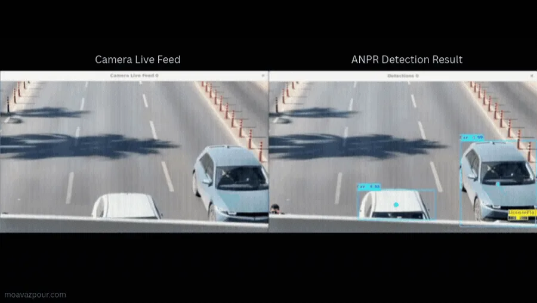

plate 0.99

Production · Anamis Electronic Vira · 2022–2025
Automatic Number Plate Recognition at the Edge
Detection, OCR, multi-object tracking and best-frame selection on Jetson Nano and low-power industrial PCs. I moved the hot path from Python to multithreaded C++ and added motion gating, so even a CPU-only Atom site went from under 30% to ~70% vehicle capture.
- 8 → 74 cameras
- 99.4% exact reads
- 0 missed / 1,200
- ~25 fps Jetson
- C++
- YOLOv4
- TensorRT
- CUDA
- OpenCV
- GStreamer
- Basler Pylon